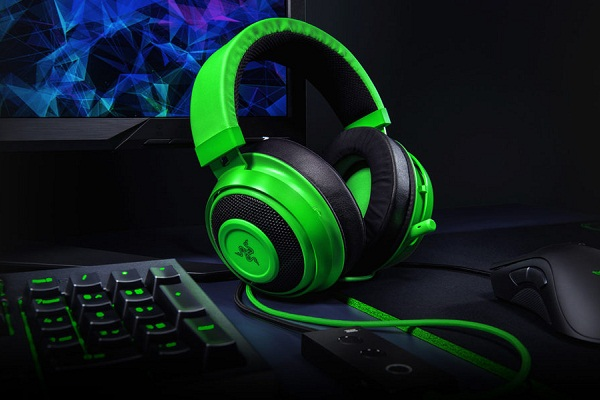
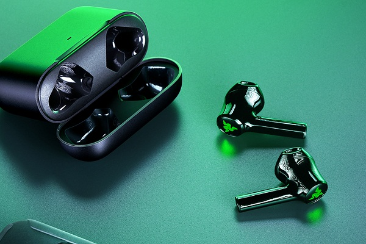
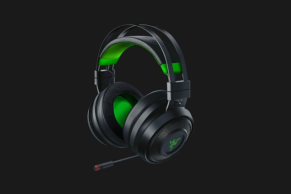

- Frecuencia de respuesta: 12 Hz–28 kHz
- Impedancia: 32 Ω a 1 kHz
- Sensibilidad a 1 kHz: 109 dB
- Potencia de entrada: 30 mW (máx.)
- Diafragmas: 50 mm, con imanes de neodimio
- Diámetro interno de la almohadilla: 54 mm x 65 mm
- Tipo de conexión: analógica de 3,5 mm
- Longitud del cable: 1,3 m/4,27 ft
- Peso aproximado: 322 g/0,71 lbs
- Almohadillas ovaladas: diseñadas para cubrir toda la oreja con gel refrigerante
- Frecuencia de respuesta: 100 Hz–10 kHz
- Relación señal/ruido: > 60 dB
- Sensibilidad a 1 kHz: -45 ± 3 dB
- Patrón de captación: brazo de micrófono ECM unidireccional
Kraken


- Respuesta de frecuencia de los auriculares: 20 Hz – 20 kHz
- Impedancia de los auriculares: 16 Ω
- Sensibilidad de los auriculares: 91 dB a 1 mW / 1 kHz
- Entrada de potencia de los auriculares: 5 mW (entrada máxima)
- Diafragmas de los auriculares: 10 mm
- Conector de los auriculares: Bluetooth 5.2
- Peso: 53 g
- Patrón de captación del micrófono: omnidireccional
- Relación señal/ruido del micrófono: 64 dB
- Sensibilidad del micrófono: -26 dBFS
Hammerhead
- Frecuencia de respuesta: 20 Hz – 20 kHz.
- Impedancia: 32Ω a 1 kHz.
- Sensibilidad a 1 kHz: 107 ± 3 dB.
- Potencia de entrada: 30 mW (máx.).
- Diafragmas: 50 mm, con imanes de neodimio.
- Diámetro interno de la almohadilla: 56 (ancho) x 67 (largo) mm.
- Almohadillas ovaladas: diseñadas para cubrir toda la oreja con gel refrigerante.
- Tipo de conexión: transceptor USB inalámbrico / analógica de 3,5 mm.
- Rango inalámbrico: 12 m/40 ft.
- Frecuencia inalámbrica: 2,4 GHz.
- Conexión analógica: 4 polos.
- Duración de la batería: hasta 14 horas con iluminación Razer Chroma / 20 horas sin iluminación Razer Chroma.
Nari
